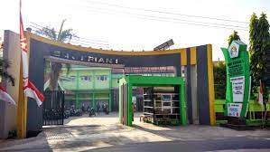
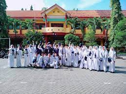

Halo nama saya Dwiki Arshendi Waluyo,saya ber sekolah di SMK KRIAN 1 SIDOARJO
Saya memilih jurusan rpl karena saya penasaran tentang komputer dan apapun yang ada didalamnya
Saya juga mengikuti ekstra Paskibra,disana kita diajarkan untuk berjuang,untuk bersabar,dan yang paling palingg dibutuhkan belajar menjadi orang yang sabar, orang yang rela berkorban, setalah memasuki ekstra ini aku merasa seperti mempunyai rumah kedua,dari yang anak anaknya suka cerita tentang hal random sampai ke anak anak yang sering banget dimarahi orang tuanya karena sering banget pulang malam, hehehe
ini adalah sekolah saya
 
ini adalah sekolah saya waktu smp yang berada di SMPN 12 GRESIK